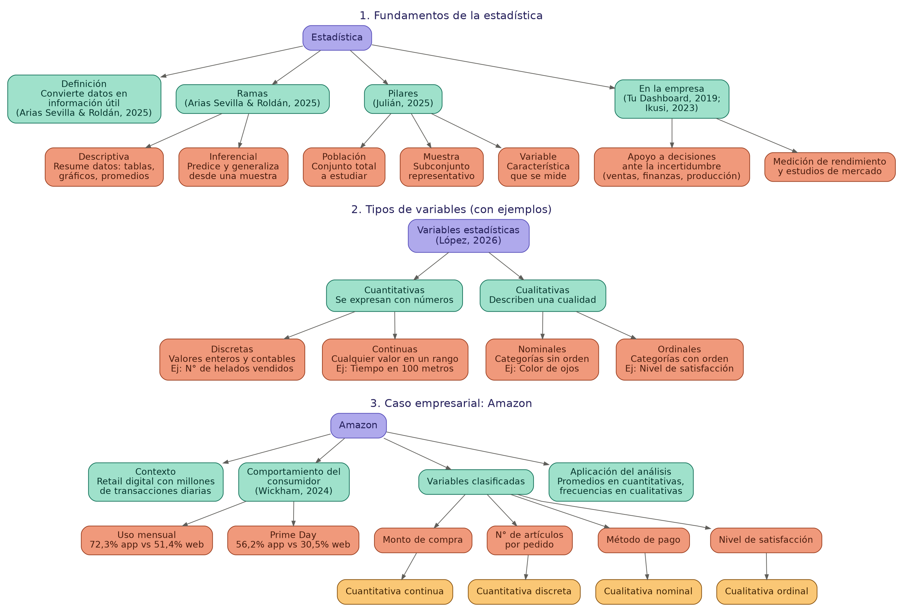

Estadística
Presentación y mapa conceptual del bloque de Estadística.
Estadística.pptx
Presentación con los conceptos principales de estadística del módulo.
Descargar presentación →Mapa conceptual — Estadística
Mapa conceptual vertical que resume el bloque de Estadística.

Ver imagen completa →